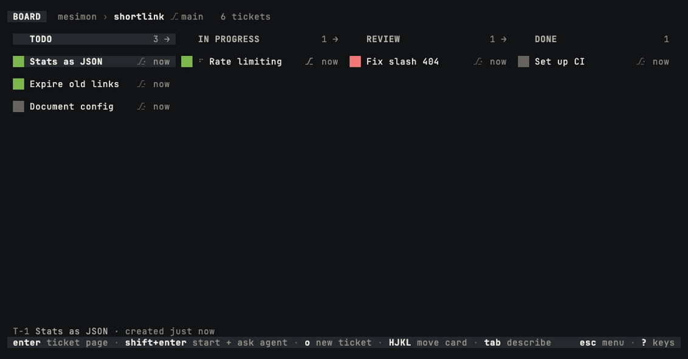

mesimon משימון
A terminal kanban board that runs your coding agents.
Your agent is the real Claude Code or Codex, in its own terminal: step into it and you have the same prompt, the same slash commands and the same permission dialogs, and mesimon never sits between you and it.
Install
curl -fsSL https://mesimon.dev/install.sh | shOr with Homebrew:
brew install amitozalvo/tap/mesimonThen run mesimon doctor. It checks your setup and prints fixes, and changes
nothing. You need macOS on Apple Silicon or Linux (x86_64 or aarch64, WSL2 included), git,
and Claude Code or Codex, signed in.
Requirements in detail.

What it does
- Start an agent on a ticket with one key. Your ticket's title and description are its first prompt. Claude Code and Codex both work.
- Each agent can work in its own worktree, on its own branch, so several agents can change the same repo at once without touching each other's files.
- The card lights when the agent needs you. The board stays quiet while agents work, and a card moves to REVIEW on its own when its agent is done.
- Review and merge with one key. v shows the branch's diff and m merges it, fast-forward only.
- Agents keep running when you close the board. The next time you open it, everything is where you left it. Idle agents can sleep and wake into the same conversation.
Three promises
- A strict write allowlist. mesimon writes to a short list of paths, every one named, and nowhere else: never your shell rc, your git config, your agent configuration or your tmux config.
- No config mutation.
mesimon doctorprints fixes for you to apply; it never applies one itself. - Zero prompt injection. mesimon adds, removes and reorders no token of your conversation. The board tools it gives its agents, and a brief you can switch on, are shown in full.
The promises in full, with every path mesimon writes.
About
mesimon is free, open-source developer software for macOS and Linux, published under the Apache-2.0 license. Amit Ozalvo writes it in Israel. The source code and the issue tracker are on GitHub, and questions go to support@mesimon.dev.
This site has no analytics, sets no cookies and loads nothing from another site.